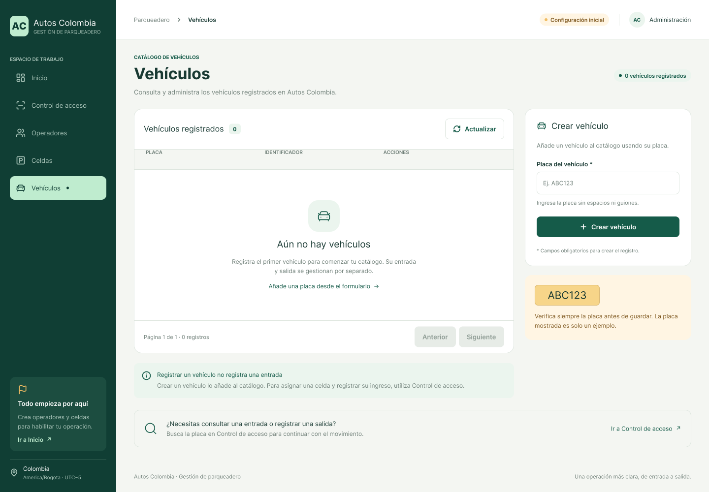
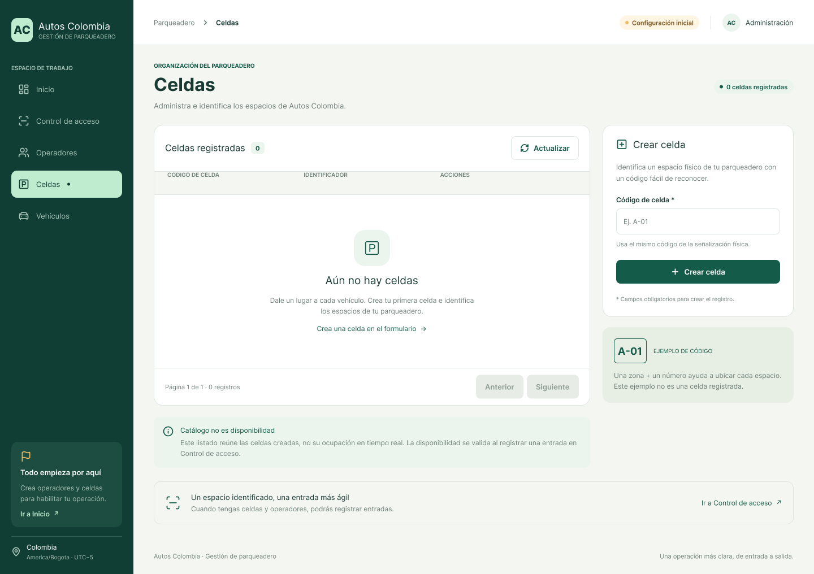
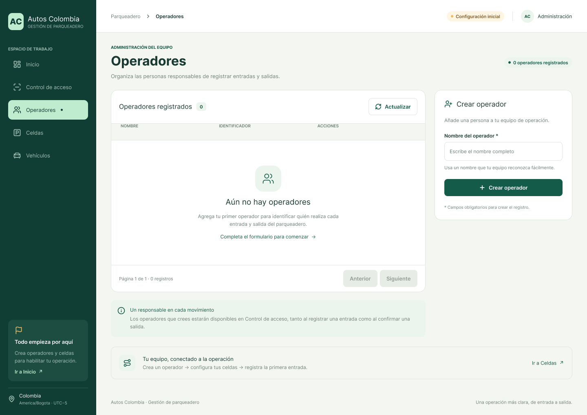
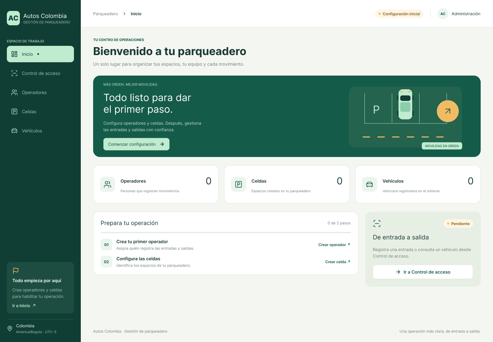
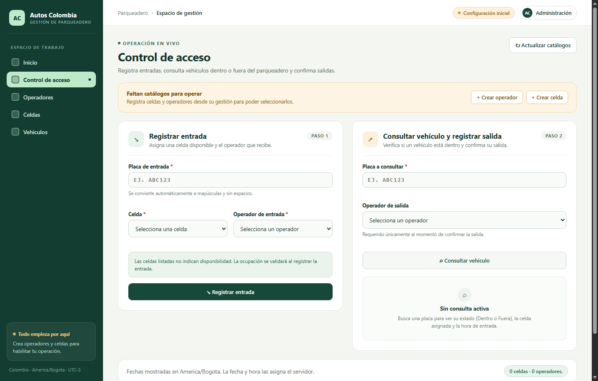
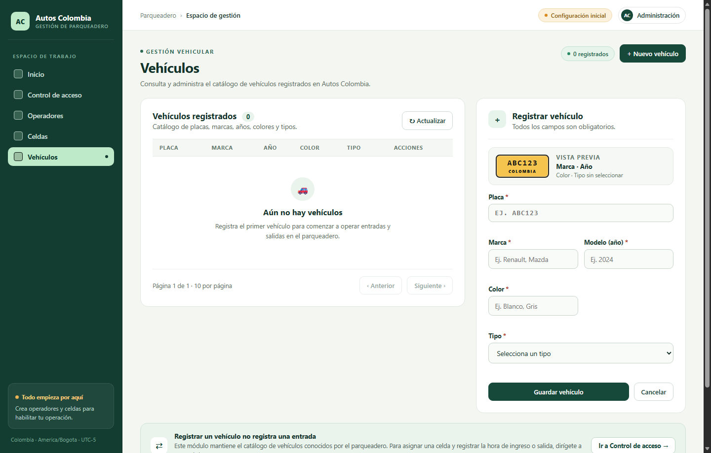

Evidencia de Aprendizaje 1. Diseño Sistema de Información – Iteración 1
Autos Colombia: Sistema de Gestión de Parqueadero
Gestión de la entrada y salida de vehículos, diseño de arquitectura y artefactos de software
Adolfo Miguel Jimenez Muñoz
Programa Académico: Ingeniería en Desarrollo de Software y Análisis de Datos
Asignatura: Ingeniería de Software
Código de la Materia: PREICA2602B020053
Docente: Reinaldo Rojas
Introducción
Autos Colombia es una aplicación web diseñada para gestionar el control de acceso (ingreso, consulta de estado y salida) de vehículos en un parqueadero, junto con la administración de sus catálogos base (vehículos, celdas de estacionamiento y operadores).
La solución implementa una arquitectura cliente-servidor desacoplada: el backend está desarrollado en Python 3.13 con FastAPI, SQLAlchemy 2.0, Alembic y PostgreSQL 17; el frontend está construido en Angular 22 con TypeScript 6.0 utilizando componentes standalone, formularios reactivos y verificación estricta de tipos y plantillas.
El presente documento desarrolla los entregables correspondientes a la Iteración 1: Gestión de la entrada y salida de vehículos, alineados con el código fuente funcional alojado en el repositorio de GitHub (https://github.com/adolfomj/AutosColombia).
Alcance de la Iteración 1
Incluido en la Iteración 1
Fuera de alcance (iteraciones futuras)
Registro transaccional de entrada de vehículos asignando celda y operador de entrada con fecha/hora UTC generada en el servidor.
Validación de unicidad de estancia abierta por vehículo y por celda mediante índices únicos parciales en PostgreSQL.
Consulta en tiempo real del estado de un vehículo por placa (Dentro, Fuera o No registrado).
Registro transaccional de salida con bloqueo pesimista (SELECT ... FOR UPDATE) y asignación de operador de salida.
CRUD paginado de los catálogos de Vehículos, Celdas y Operadores con protección de integridad referencial (ON DELETE RESTRICT).
Autenticación de usuarios, sesiones y control de acceso basado en roles (RBAC).
Liquidación de tarifas, facturación, cobro por tiempo de permanencia y medios de pago.
Consulta previa de disponibilidad de celdas en tiempo real (la ocupación se valida transaccionalmente al registrar la entrada).
Edición o eliminación de registros históricos de estancias.
Contenido de entregables
Requerimientos funcionales y no funcionales para la gestión de entrada y salida de vehículos.
Historias de usuario asociadas.
Arquitectura del sistema de la aplicación (notación StarUML).
Referencia de prototipos/mockups de las historias de usuario en Figma.
Modelo Entidad-Relación (MER), Modelo Relacional (MR) y Modelo Físico de base de datos.
Diagrama de casos de uso (notación StarUML).
Diagrama de clases (notación StarUML).
Diagrama de paquetes (notación StarUML).
Código fuente corriendo y en repositorio en GitHub.
Entregables — Iteración 1: Gestión de la entrada y salida de vehículos
1. Requerimientos funcionales y no funcionales
1.1 Requerimientos funcionales (RF)
Código
Descripción del requerimiento funcional
Prioridad
RF-01
El sistema debe permitir registrar la entrada de un vehículo recibiendo la placa, el identificador de la celda y el identificador del operador de entrada, asignando automáticamente la fecha y hora actual del servidor en UTC.
Alta
RF-02
El sistema debe verificar al registrar una entrada que el vehículo (por placa), la celda y el operador existan en la base de datos; si alguno no existe, debe rechazar la operación con estado HTTP 404.
Alta
RF-03
El sistema debe impedir el registro de entrada si el vehículo ya cuenta con una estancia abierta (sin fecha de salida), devolviendo estado HTTP 409 con el mensaje «El vehículo ya está dentro.».
Alta
RF-04
El sistema debe impedir el registro de entrada en una celda que ya tiene una estancia abierta, devolviendo estado HTTP 409 con el mensaje «La celda está ocupada.».
Alta
RF-05
El sistema debe permitir registrar la salida de un vehículo recibiendo únicamente su placa y el identificador del operador de salida, cerrando la estancia abierta con la fecha y hora UTC del servidor.
Alta
RF-06
El sistema debe rechazar el intento de salida de un vehículo que no tenga una estancia abierta activa, devolviendo estado HTTP 409 con el mensaje «El vehículo no tiene una estancia abierta.».
Alta
RF-07
El sistema debe permitir consultar el estado actual de un vehículo por su placa, indicando sus datos básicos, si se encuentra dentro o fuera (esta_dentro) y, en caso de estar dentro, los datos de la estancia abierta y de la celda asignada.
Alta
RF-08
El sistema debe normalizar automáticamente las placas de vehículos y los códigos de celdas recortando espacios extremos y convirtiendo los caracteres a mayúsculas tanto en el frontend como en el backend.
Alta
RF-09
El sistema debe almacenar en cada estancia la trazabilidad tanto del operador que dio ingreso (operador_entrada_id) como del operador que registró la salida (operador_salida_id).
Media
RF-10
El sistema debe preservar el historial íntegro de estancias cerradas sin exponer operaciones de edición ni borrado sobre la tabla estancia.
Media
RF-11
El sistema debe proveer operaciones CRUD y listado paginado para el catálogo de vehículos (placa única, marca, modelo/año entre 1 y 9999, color y tipo restringido a MOTO, AUTOMOVIL o CAMIONETA).
Alta
RF-12
El sistema debe proveer operaciones CRUD y listado paginado para el catálogo de celdas (código único normalizado y tipo en texto libre obligatorio).
Alta
RF-13
El sistema debe proveer operaciones CRUD y listado paginado para el catálogo de operadores (nombre completo y teléfono obligatorios).
Alta
RF-14
El sistema debe impedir la eliminación de vehículos, celdas u operadores que tengan estancias registradas (abiertas o históricas), respondiendo HTTP 409 sin realizar borrados en cascada.
Media
RF-15
La pantalla de control de acceso debe cargar todas las páginas de los catálogos de celdas y operadores avanzando por offset (con limit=100) hasta completar el total de registros antes de habilitar la captura.
Media
RF-16
El sistema debe exponer el endpoint GET /health devolviendo HTTP 200 y {"status": "ok"} para verificar la disponibilidad del servicio.
Baja
1.2 Requerimientos no funcionales (RNF)
Código
Atributo de calidad
Especificación técnica
RNF-01
Integridad de datos
El motor PostgreSQL debe hacer cumplir las reglas mediante restricciones declarativas: claves foráneas con ON DELETE RESTRICT, restricciones CHECK de formato/rango y dos índices únicos parciales (WHERE salida IS NULL) sobre vehiculo_id y celda_id.
RNF-02
Control de concurrencia
Cada operación de negocio debe ejecutarse en una transacción atómica. El cierre de estancia debe bloquear la fila activa con SELECT ... FOR UPDATE para evitar condiciones de carrera ante solicitudes simultáneas.
RNF-03
Seguridad y privacidad
Las credenciales de base de datos se leen desde variables de entorno o backend/.env (excluido de Git). Los errores internos de SQLAlchemy/psycopg se capturan y transforman en respuestas HTTP 409, 422 o 503 sin exponer trazas ni cadenas de conexión.
RNF-04
Validación estricta de contratos
Los esquemas Pydantic deben configurar extra="forbid", rechazar booleanos donde se esperan enteros, exigir enteros positivos dentro del rango BIGINT (1 a 9223372036854775807) y prohibir que el cliente envíe fechas o identificadores autogenerados.
RNF-05
Usabilidad y prevención de errores
La interfaz Angular debe bloquear los botones y formularios mientras exista una petición en curso, invalidar resultados previos cuando el usuario modifica la placa consultada y presentar mensajes de validación y conflicto en español.
RNF-06
Consistencia horaria
Las marcas de tiempo deben almacenarse en PostgreSQL como TIMESTAMP WITH TIME ZONE en UTC y formatearse en el navegador siempre bajo el huso horario America/Bogota mediante Intl.DateTimeFormat.
RNF-07
Mantenibilidad
Separación estricta de responsabilidades en capas (routers, schemas, services, models en backend; componentes standalone, services y models en frontend con strict y strictTemplates habilitados).
RNF-08
Verificabilidad
El proyecto debe contar con pruebas automatizadas reproducibles: 111 pruebas en backend con pytest y TestClient (incluyendo pruebas de concurrencia e integración sobre PostgreSQL con rollback) y 38 pruebas unitarias en frontend con Vitest/Angular.
2. Historias de usuario asociadas
HU-01: Registrar entrada de un vehículo al parqueadero
Como operador de control de acceso, Quiero registrar el ingreso de un vehículo indicando su placa, la celda asignada y mi operador, Para ocupar formalmente la celda e iniciar el control de su estancia con la hora oficial del sistema.
Criterios de aceptación:
CA-1.1 (Registro exitoso): Dado un vehículo previamente registrado sin estancia abierta y una celda libre, cuando ingreso la placa (con o sin espacios/minúsculas), selecciono la celda y el operador y envío el formulario, entonces el sistema registra la estancia (HTTP 201) y muestra la confirmación con la placa normalizada, código de celda y fecha/hora de ingreso en zona America/Bogota.
CA-1.2 (Rechazo por vehículo dentro): Dado un vehículo con una estancia abierta activa, cuando intento registrar nuevamente su entrada, entonces el sistema rechaza la solicitud (HTTP 409) y muestra el mensaje «El vehículo ya está dentro.».
CA-1.3 (Rechazo por celda ocupada): Dada una celda que tiene una estancia abierta activa, cuando intento asignar otro vehículo a esa misma celda, entonces el sistema rechaza la solicitud (HTTP 409) y muestra «La celda está ocupada.».
CA-1.4 (Vehículo inexistente): Dada una placa que no existe en el catálogo de vehículos, cuando intento registrar su entrada, entonces el sistema responde HTTP 404 y muestra «Vehículo no encontrado.».
CA-1.5 (Validación de campos obligatorios): Si la placa está vacía o compuesta solo por espacios, o no se ha seleccionado celda u operador, el formulario impide el envío y señala el campo requerido.
HU-02: Consultar el estado actual de un vehículo por placa
Como operador de control de acceso, Quiero consultar una placa en cualquier momento, Para verificar si el vehículo se encuentra dentro del parqueadero (y en qué celda) o si está fuera.
Criterios de aceptación:
CA-2.1 (Vehículo dentro): Dado un vehículo con estancia abierta, cuando consulto su placa, entonces la pantalla muestra el estado Dentro, la marca, el color, el código de la celda ocupada, la fecha/hora de entrada en Bogotá y habilita la opción de confirmar su salida.
CA-2.2 (Vehículo fuera): Dado un vehículo registrado en el catálogo pero sin estancia abierta, cuando consulto su placa, entonces la pantalla muestra Fuera — Vehículo registrado sin estancia abierta sin mostrar el botón de salida.
CA-2.3 (Vehículo no registrado): Dada una placa que no figura en el catálogo, cuando realizo la consulta, entonces el sistema informa «Vehículo no registrado.» (HTTP 404).
CA-2.4 (Invalidación al editar la placa): Cuando modifico el texto del campo de placa consultada, el resultado anterior se limpia de inmediato y se descartan respuestas HTTP tardías de consultas previas.
HU-03: Registrar salida de un vehículo
Como operador de control de acceso, Quiero confirmar la salida de un vehículo que se encuentra dentro seleccionando el operador de turno, Para cerrar su estancia con la hora del servidor y liberar la celda para nuevos ingresos.
Criterios de aceptación:
CA-3.1 (Cierre exitoso): Dado un vehículo consultado cuyo estado es Dentro, cuando selecciono el operador de salida y pulso «Confirmar salida», entonces el sistema envía únicamente placa y operador_id, asigna la fecha de salida en UTC (HTTP 200), muestra el mensaje de confirmación y refresca automáticamente el estado del vehículo a Fuera.
CA-3.2 (Liberación inmediata de celda): Una vez confirmada la salida, la celda asociada queda libre inmediatamente para admitir la entrada de otro vehículo.
CA-3.3 (Conflicto o estancia ya cerrada): Si otro operador cerró la estancia simultáneamente, el sistema responde HTTP 409, informa el conflicto y exige volver a consultar la placa antes de reintentar.
HU-04: Administrar el catálogo de vehículos
Como administrador del parqueadero, Quiero registrar, consultar de forma paginada, editar y eliminar vehículos, Para mantener actualizado el padrón de vehículos habilitados en el control de acceso.
Criterios de aceptación:
CA-4.1: Permite crear vehículos con placa, marca, modelo (año entero entre 1 y 9999), color y tipo (MOTO, AUTOMOVIL o CAMIONETA), normalizando la placa a mayúsculas.
CA-4.2: Rechaza placas duplicadas con HTTP 409 y bloquea la eliminación si el vehículo posee estancias asociadas.
HU-05: Administrar el catálogo de celdas de estacionamiento
Como administrador del parqueadero, Quiero crear, listar, actualizar y eliminar celdas con su código único y tipo, Para disponer de los espacios físicos asignables durante el ingreso de vehículos.
Criterios de aceptación:
CA-5.1: El código de la celda se normaliza en mayúsculas sin espacios exteriores y no permite duplicados (HTTP 409).
CA-5.2: No permite eliminar una celda que tenga estancias registradas (HTTP 409 por restricción RESTRICT).
HU-06: Administrar el catálogo de operadores
Como administrador del parqueadero, Quiero crear, listar, editar y eliminar operadores indicando su nombre y teléfono, Para identificar al responsable de cada operación de entrada y salida.
Criterios de aceptación:
CA-6.1: Exige nombre y teléfono no vacíos; impide eliminar un operador referenciado en estancias de entrada o salida (HTTP 409).
3. Arquitectura del sistema de la aplicación (StarUML)
La arquitectura de Autos Colombia sigue un diseño cliente-servidor en tres capas: presentación SPA en Angular 22, capa de servicios y lógica de dominio en FastAPI (Python 3.13) y capa de persistencia relacional en PostgreSQL 17. El siguiente diagrama en notación de componentes y nodos de StarUML representa los subsistemas, artefactos y protocolos de comunicación:
Figura 1. Diagrama de arquitectura y componentes del sistema en estilo StarUML.
4. Mockups de las historias de usuario en Figma
Prototipos de alta fidelidad diseñados en Figma para cada una de las historias de usuario de la Iteración 1.
Actualización de catálogos, formulario de registro de entrada con celda y operador, consulta de estado por placa y confirmación de salida con zona horaria America/Bogota.
HU-04
Gestión de vehículos
/gestion/vehiculos
Listado paginado, formulario reactivo de registro/edición y confirmación de eliminación.
HU-05
Gestión de celdas
/gestion/celdas
Listado paginado de celdas con código normalizado y tipo libre.
HU-06
Gestión de operadores
/gestion/operadores
Listado paginado de operadores con nombre y teléfono.
RF-16
Inicio y estado del servicio
/
Resumen operativo y verificación de salud de la API (GET /health).
Mockup Figma 1. Pantalla de Control de acceso (HU-01 Registrar entrada, HU-02 Consultar estado, HU-03 Registrar salida).

Mockup Figma 2. Pantalla de Gestión de vehículos (HU-04).

Mockup Figma 3. Pantalla de Gestión de celdas (HU-05).

Mockup Figma 4. Pantalla de Gestión de operadores (HU-06).

Mockup Figma 5. Pantalla de Inicio y estado del sistema (RF-16).
5. Modelo Entidad-Relación (MER), Modelo Relacional (MR) y Modelo Físico
5.1 Modelo Entidad-Relación conceptual (MER en estilo StarUML ERD)
En el dominio del problema, una Estancia vincula un Vehículo con una Celda durante un intervalo de tiempo determinado por una fecha de entrada obligatoria y una fecha de salida opcional (nula mientras el vehículo permanece dentro). Cada estancia registra obligatoriamente el Operador que procesó la entrada y, una vez finalizada, el Operador que procesó la salida.
Figura 2. Modelo Entidad-Relación conceptual (MER) en notación Crow's Foot de StarUML.
5.2 Modelo Relacional (MR)
Transformación del modelo conceptual al esquema relacional en tercera forma normal (3FN), incorporando claves primarias sustitutas (id), claves candidatas únicas (UQ) y claves foráneas (FK):
VEHICULO (id PK, placa UQ NOT NULL, color NOT NULL, modelo NOT NULL, marca NOT NULL, tipo NOT NULL)
CELDA (id PK, codigo UQ NOT NULL, tipo NOT NULL)
OPERADOR (id PK, nombre NOT NULL, telefono NOT NULL)
ESTANCIA (id PK,
vehiculo_id FK → VEHICULO(id) ON DELETE RESTRICT NOT NULL,
celda_id FK → CELDA(id) ON DELETE RESTRICT NOT NULL,
entrada NOT NULL,
salida NULL,
operador_entrada_id FK → OPERADOR(id) ON DELETE RESTRICT NOT NULL,
operador_salida_id FK → OPERADOR(id) ON DELETE RESTRICT NULL)
5.3 Modelo Físico de Datos (PostgreSQL 17 en estilo StarUML ERD)
Figura 3. Modelo físico de datos en PostgreSQL 17 (revisiones Alembic 0001 y 0002) en estilo StarUML ERD.
6. Diagrama de casos de uso (StarUML)
El siguiente diagrama en notación UML de casos de uso (estilo StarUML) modela las interacciones de los actores Operador y Administrador con el límite del sistema Autos Colombia, incluyendo las relaciones «include» para la carga paginada de catálogos y la verificación previa del estado del vehículo antes de confirmar una salida:
Figura 4. Diagrama de casos de uso de la Iteración 1 en estilo StarUML.
7. Diagrama de clases (StarUML)
El diagrama de clases en notación StarUML representa las entidades persistentes del dominio (Vehiculo, Celda, Operador, Estancia), el servicio transaccional (ServicioEstancia), el manejo de excepciones de negocio (EstanciaError) y los esquemas de transferencia de datos (DTOs Pydantic):
Figura 5. Diagrama de clases del módulo de control de estancias y entidades asociadas en estilo StarUML.
8. Diagrama de paquetes (StarUML)
El diagrama de paquetes en notación StarUML (con pestaña superior característica de carpeta UML) muestra la organización modular de frontend/src/app y backend/app, así como las relaciones de dependencia («import», «http/rest») entre capas:
Figura 6. Diagrama de paquetes del proyecto en estilo StarUML.
9. Código fuente corriendo y en repositorio en GitHub
9.2 Evidencia de la aplicación corriendo localmente

Figura 7. Captura real de la pantalla Control de acceso ejecutándose en http://127.0.0.1:4200/control-acceso.

Figura 8. Captura real de la pantalla Gestión de vehículos en http://127.0.0.1:4200/gestion/vehiculos.
Conclusiones
El desarrollo y diseño integral de la Iteración 1: Gestión de la entrada y salida de vehículos para Autos Colombia permitió alcanzar satisfactoriamente los objetivos propuestos, consolidando los siguientes aspectos clave:
Solidez en el modelado y la arquitectura: La integración de diagramas en notación StarUML (Casos de Uso, Clases, Paquetes y Modelos de Datos Conceptual y Físico) permitió establecer una separación nítida de responsabilidades entre el frontend cliente y el backend transaccional, garantizando mantenibilidad, trazabilidad y bajo acoplamiento.
Garantía de integridad y consistencia de datos: Mediante restricciones físicas en PostgreSQL (índices únicos parciales para estancias abiertas, claves foráneas con ON DELETE RESTRICT y control de concurrencia pesimista), se erradicaron anomalías críticas del negocio tales como registrar múltiples ingresos simultáneos de una misma placa o sobreasignar celdas previamente ocupadas.
Fidelidad visual y experiencia de usuario: La interfaz reactiva construida en Angular 22 logró una estricta fidelidad con el prototipo de alta fidelidad diseñado en Figma, brindando al operador una navegación intuitiva, validaciones inmediatas en cliente y un control de accesos ágil y sin ambigüedades.
Calidad del software comprobada: La cobertura exhaustiva de pruebas automáticas (111 pruebas unitarias y de integración en backend con pytest, y 38 pruebas unitarias en frontend con Vitest) asegura que los flujos críticos de negocio respondan con precisión y resiliencia ante excepciones, colisiones de red o estados inconsistentes.